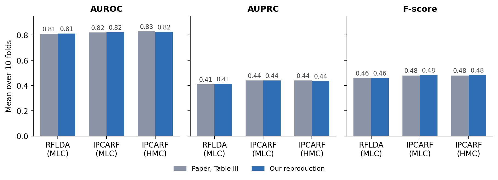
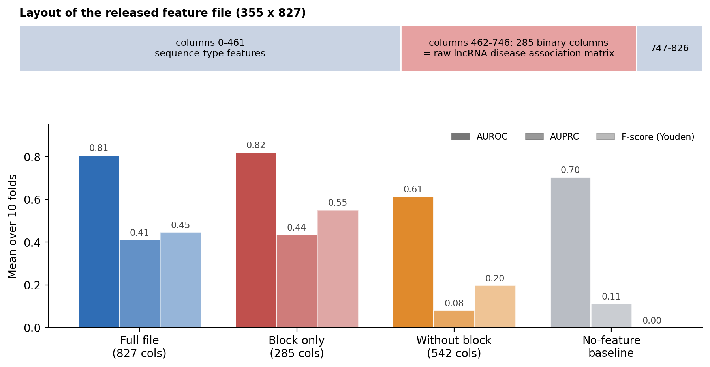
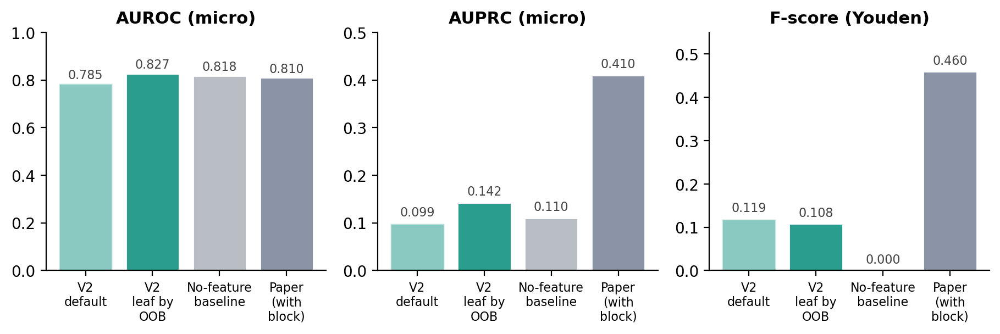
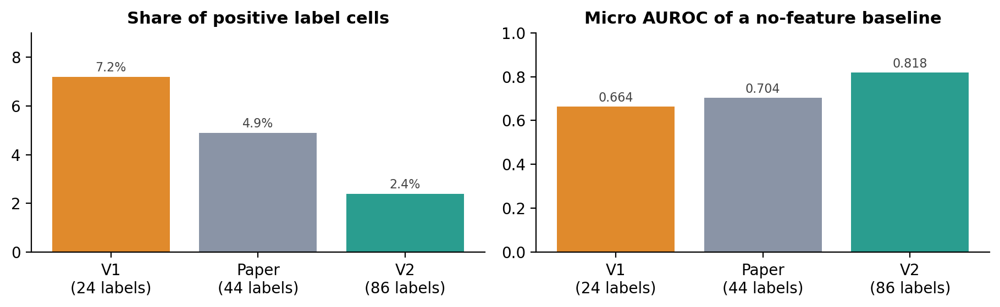
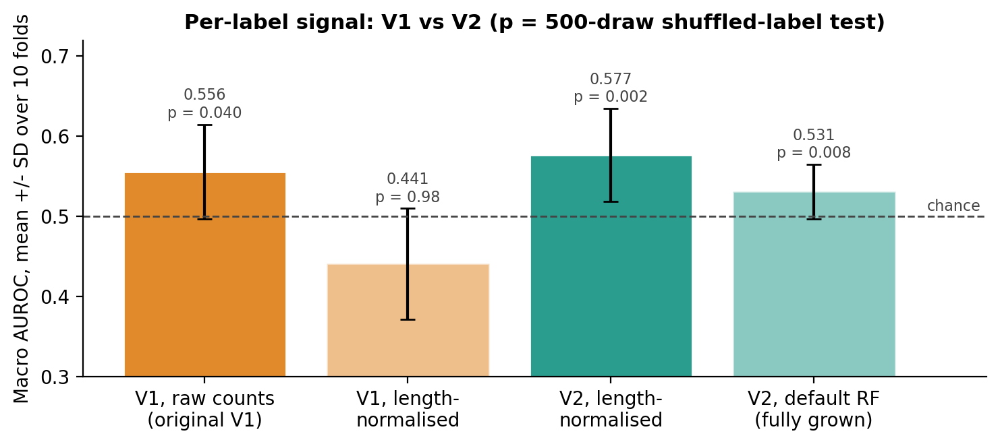
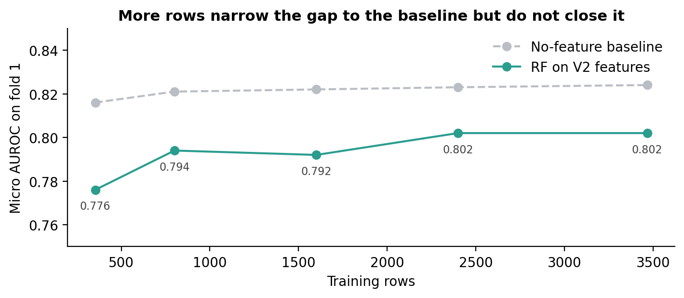

Inputs: the released 355×827 feature file, the 355×44 label matrix (and the MeSH-extended 369-label matrix for HMC), and the released 10 inductive folds. Models: the authors' code with 150 trees, seed 0, 5-fold inner CV for IPCARF components {2…128} and RFLDA feature counts. Metrics: micro AUROC and AUPRC per fold, then the mean over 10 folds. F-score, precision and recall use the authors' per-label Youden threshold, fitted on each test fold (evaluate.py, commit 73b21ee). For HMC the 369-label predictions are cut to the 44 original diseases before scoring, as in Section III-C.

| Model | AUROC | AUPRC | Precision | Recall | F | Paper AUROC / AUPRC / F |
|---|---|---|---|---|---|---|
| Plain RF (150 trees) | 0.807 | 0.411 | 0.324 | 0.751 | 0.447 | no plain RF row |
| RFLDA (MLC) | 0.811 | 0.413 | 0.335 | 0.748 | 0.460 | 0.81 / 0.41 / 0.46 |
| IPCARF (MLC) | 0.823 | 0.440 | 0.356 | 0.773 | 0.483 | 0.82 / 0.44 / 0.48 |
| IPCARF (HMC) | 0.825 | 0.436 | 0.357 | 0.782 | 0.484 | 0.83 / 0.44 / 0.48 |
The largest deviation is RFLDA (MLC) accuracy, 0.138 against 0.17. An independent recomputation from the saved predictions agreed to 0.00005; three IPCARF folds refit from scratch gave identical predictions. Changing the seed to 1 moves MLC AUPRC to 0.424, so agreement at the 0.005 level does not by itself pin down the exact protocol.
The released file has 827 columns. Columns 462–746 are 285 binary columns whose total is 1,132, the number of positive associations in the raw 355×285 matrix (raw_data/sequences.csv) and in Table I. They match that matrix's disease columns in order. For rows 0–230 (231 of 231 rows) the block is exactly the row's own disease-association vector; for later rows it is shifted by one or two positions, at the two lncRNAs missing from the 353-row sequence set. Anyone can check this with leak_check.py, which uses only the released files.

Two further points affect how the numbers read. F, precision and recall use a threshold fitted on the labels of the fold being scored, so they are in-sample; with a fixed 0.5 cut-off the same model scores F 0.316. And micro AUROC largely reflects label frequency: a predictor that outputs only each label's training prevalence scores 0.704 on the paper's 44 labels.
V2 has 3,849 transcripts and 86 diseases (at least 10 positives each), built from LncRNADisease records and the sequences we could retrieve. We used the paper's measure and folds: 10-fold inductive, micro metrics per fold, Youden threshold on the test fold, 150 trees. Features are our 583 sequence features (k-mer, reverse-complement k-mer, k-gap, Z-curve), length-normalised.

| V2 model | AUROC | AUPRC | Youden F | Macro AUROC | Shuffle test p |
|---|---|---|---|---|---|
| Default RF (fully grown trees) | 0.785 | 0.099 | 0.119 | 0.531 | 0.008 |
| RF, leaf size by out-of-bag score | 0.827 | 0.142 | 0.108 | 0.577 | 0.002 |
| No-feature baseline | 0.818 | 0.110 | 0 | 0.500 | – |
| Paper (with the 285-column block) | 0.81 | 0.41 | 0.46 | – | – |

V2 has about ten times more rows than V1 and 86 rather than 24 labels, so we expected it to score higher. It scores higher on micro AUROC only. We checked for a defect and found none: appending a copy of the labels to the features scores 0.974 micro AUROC through the V2 pipeline, shuffling the labels drops macro AUROC to chance, the row chain from the raw records (25,440 rows → 3,849) reproduces, and no test transcript shares a gene with a training transcript. Three differences explain the rest.

| 10 folds, hyperparameters chosen without test folds | Micro AUROC (baseline) | AUPRC skill | Macro AUROC | p |
|---|---|---|---|---|
| V1, raw counts (original V1) | 0.657 (0.664) | +0.028 | 0.556 | 0.040 |
| V1, length-normalised | 0.559 (0.664) | −0.030 | 0.441 | 0.98 |
| V2, length-normalised | 0.827 (0.818) | +0.036 | 0.577 | 0.002 |
AUPRC skill = (AUPRC − baseline AUPRC) / (1 − baseline AUPRC).
On matched, length-normalised features V2 is clearly ahead of V1. Against V1 with raw counts, V2's macro AUROC (0.577 against 0.556) is within one standard deviation. The fair summary is that V2 is modestly better and its signal is more statistically solid, not that it is many times better.

| Item | Status |
|---|---|
| Folds, measure, threshold rule, 150 trees, seed | Same as the paper (10-fold inductive, micro per fold, Youden on test fold). |
| Section 1 models | Authors' own code, committed IPCARF/RFLDA, paper hyperparameters. |
| Features for V2 | Not the paper's. The eight Pse-in-One families cannot be rebuilt: the released file has numeric column names and no configuration. |
| 285-column block for V2 | Not built. It would mean copying each transcript's own labels into its features. |
| IPCARF / RFLDA on V2 | Not run. The V2 numbers are plain RF. |
| Labels | V2 has 86 diseases and 3,849 transcripts; the paper has 44 and 355. V1 has 24 diseases and 353 lncRNAs. |
features_preprocessed.csv be read, given Section IV-B? Could you share the script that built the file?inductive_splits.csv?| Variant / metric | Paper | 10 folds | 5 folds |
|---|---|---|---|
| IPCARF (HMC) AUROC | 0.83 | 0.825 | 0.832 |
| IPCARF (HMC) AUPRC | 0.44 | 0.436 | 0.431 |
| IPCARF (HMC) Precision | 0.36 | 0.357 | 0.282 |
| IPCARF (HMC) F | 0.48 | 0.484 | 0.408 |
| IPCARF (MLC) AUROC | 0.82 | 0.823 | 0.821 |
| IPCARF (MLC) Precision | 0.36 | 0.356 | 0.267 |
| IPCARF (MLC) F | 0.48 | 0.483 | 0.389 |
AUROC and AUPRC barely change with fold count; the threshold-based metrics do, because each test fold is larger and the Youden threshold is fitted on it.
scripts/reproduce_paper_reference.py: plain RF on the released files.results/paper_reproduction_reference_2026-09-20/ipcarf/: IPCARF (MLC, HMC), 10 folds, with FIDELITY.md.results/paper_reproduction_reference_2026-09-20/table3_other_rows/: RFLDA (MLC).results/paper_reproduction_reference_2026-09-20/leak_check.py: the check in Section 2.results/paper_measure_v1_v2_2026-09-21/ and results/fair_v1_v2_nested_2026-09-21/: V1 and V2 tables.